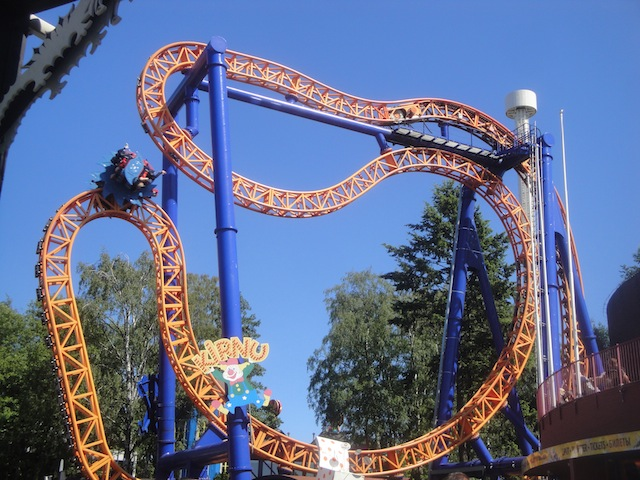
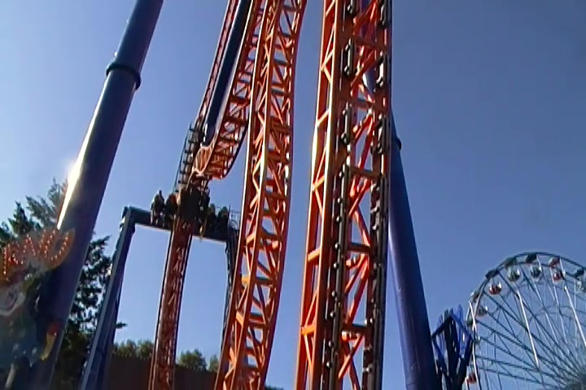
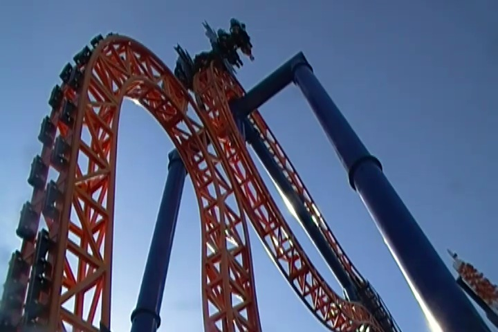
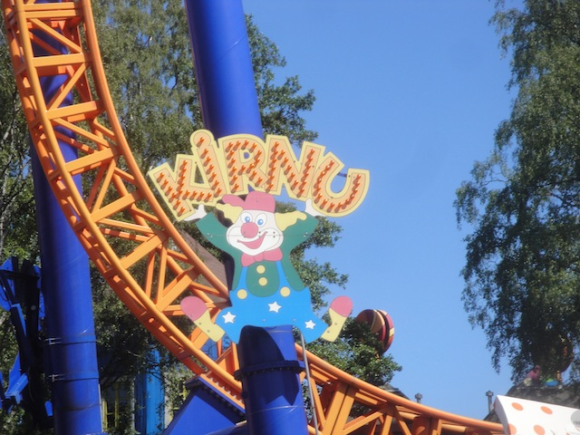

| |
Kirnu Review

We're here at Linnanmäki. Today's ride we'll be reviewing for you is Kirnu, the parks Zac Spin. Yep. They have a Zac Spin here. Granted, it's one of the much smaller models, but still! They have a Zac Spin here! And while, yeah. It's not the big model, like Insane @ Grona Lund. But hey. At least Kirnu isn't neutered like Green Lantern. So that's the good news. You just might get some good flips on this ride. So what are we waiting for!? Get in the cars, pull down the vest OTSRs, and away we go! You climb up the lifthill, and get a nice view of Linnanmäki, and can even see out into Helsinki. But before long, you reach the top and head down a dip before heading back up through some straight track. That dip gets the cars starting to flip. So you just might be facing towards the ground or the sky depending on the weight distribution. But there's no time for that, as we head down the first dip. This gives us some speed, and you never know how you'll go down the drop thanks to the weight distribution. Rise up, and down into one of those sort of twisted drops. WEE!!! OH SH*T!!! Yeah. You just might faceplant the ground on this thing. Or get a good flip as you never know just how you might tumble on down. We then reach the final hump and WHOA!!! Yep. This is one of those flip guaranteed moments. It's practicaly impossible to not flip. And if for some reason, you don't, well, then expect some extremely brutal airtime before hitting the brake run back into the station. So yeah. That's Kirnu. The original Intamin Zac Spin. Honestly, the best way to describe this ride is basically the Zac Spin prototype, which it almost certainly is. Also, a good way of putting it would be that it's basically the Jr. version of Insane. YEah, this is basically Insane with training wheels. It's not quite as insane as...welll...Insane. But it does help work your way up to that Insanity over in Sweden, and it's just an overall really fun ride that's definetly worth a ride of two.
7/10
Location: Linnanmäki
Opened: 2007
Built by: Intamin
Last Ridden: June 28, 2014
Kirnu Photos



Home
|